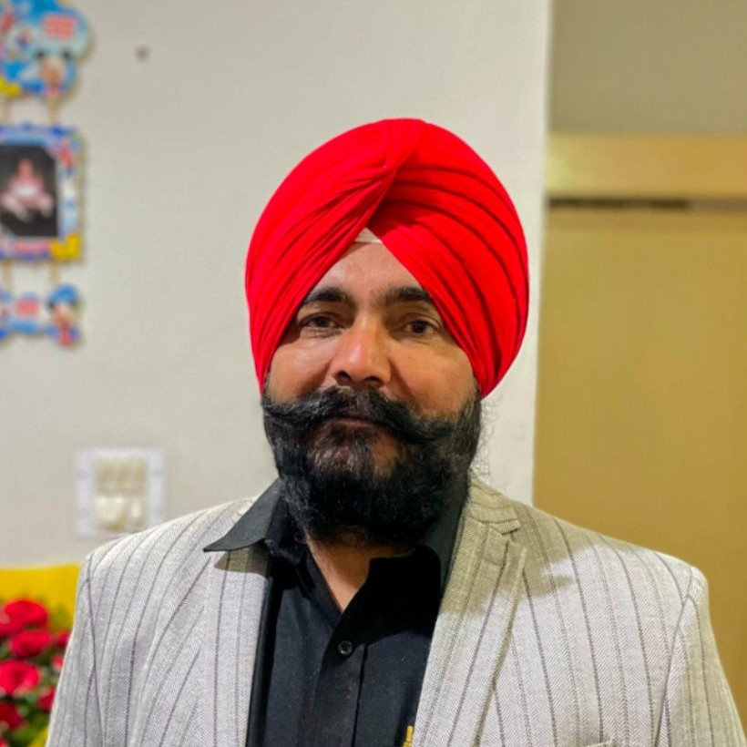

☎️ Phone: +91-9646020543
✉️ Email: kssandha@thapar.edu

-Work Experience: (24 Years 8 Months):
• Have been serving as Associate Professor in Thapar Institute of Engineering and Technology Patiala since July 2023.
• Have served as Assistant Professor in Thapar Institute of Engineering and Technology Patiala since 06-07-2009.
• Have served as Assistant Professor in Modi Institute of Technology & Sciences, Lakhshmangarh (a Deemed University) from 30-11-2007 to 04-07-2009.
• Have served as Assistant Professor in Adesh Institute of Engineering & Technology, Faridkot from 31-05-2007 to 29-11-2007.
• Have served as lecturer in Adesh Institute of Engineering & Technology, Faridkot from 07-08-1999 to 30-05-2007.
-Administrative Responsibilities at TIET:
• Coordinator, Departmental Placements, and Internship team since Feb, 2024.
• Member, Departmental DPPC for AY 2023-24.
• Co-Coordinator, Department NBA Accreditation Team, and Coordinating with NBA-ENC team visit held during September 1-3, 2023.
• Co-coordinator, ECED, Experiential Learning Center, TIET, since 2018, to perform different activities under ELC for UG students.
• Member, Entrepreneurship and Innovation team of TIET.
• Lab Incharge of Microcontroller and Embedded Systems Lab since 2011, to maintain and upgrade the lab facilities
• Departmental Coordinator of Time Table Committee from 2011-2019.
• Member, Departmental DPPC, AY 2018-19.
-Administrative Responsibilities held before to join TIET:
• Head, ECED in Adesh Institute of Engineering & Technology, Faridkot from 01-06-2004 to 29-11-2007.
• In charge Examination, Adesh Institute of Engineering & Technology, Faridkot from 01-06-2005 to 29-11-2007.
• Program Officer NSS unit, Adesh Institute of Engineering & Technology, Faridkot from 01-06-2004 to 29-11-2007.
• President, Student Welfare Club, Adesh Institute of Engineering & Technology, Faridkot from 01-06-2004 to 29-11-2007.